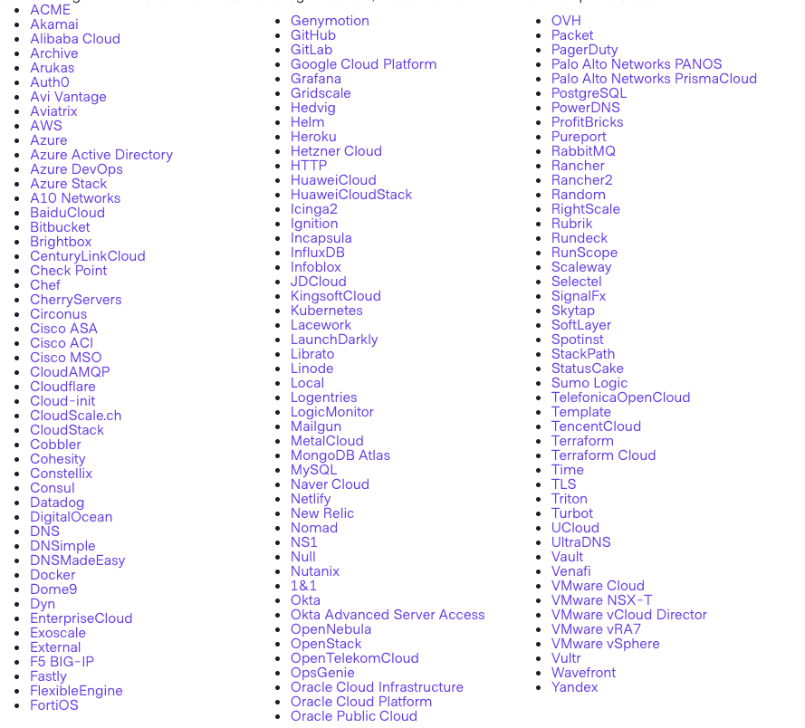
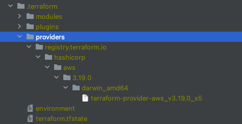

Terraform Workshop
Beginner Terraform (AWS) workshop, plus a bit of Github + CircleCI for automation.
Beginner Terraform (AWS) workshop, plus a bit of Github + CircleCI for automation.
Tool for building, changing, and versioning infrastructure.
Infrastructure as code
Terraform is a free and open-source, written in Go
Terraform uses its own configuration language, but you have an option to use plain JSON
Terraform is designed to be extendable, so every service implemented as a provider
Providers and plugins are downloaded automatically into .terraform folder during terraform init
Multiple workspaces to separate deployments but re-use same infrastructure config
.terraform/terraform.tfstate
Fill your aws keys
...